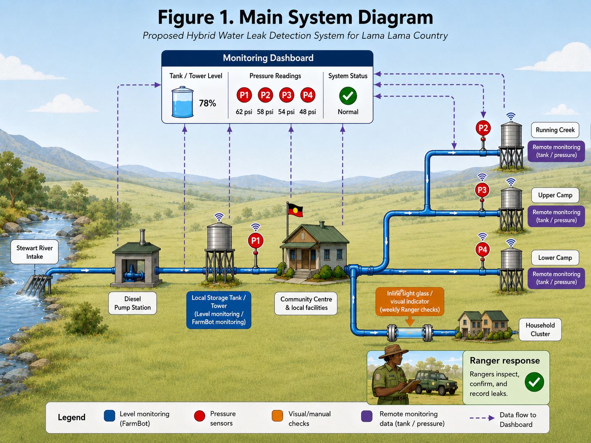
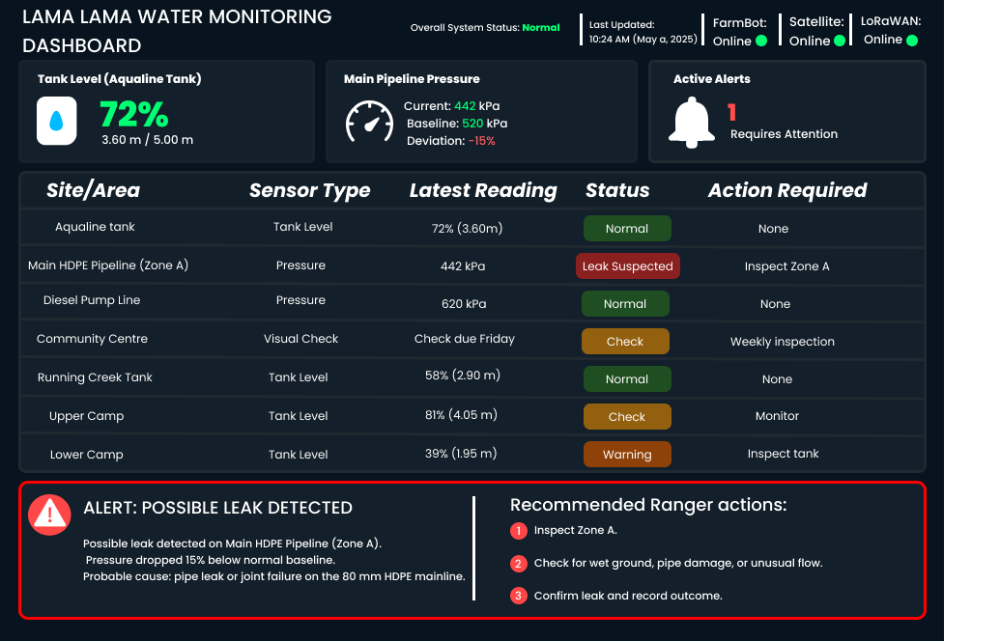

Prototyping
Prototype Aim and Selection
The prototype will focus on how the system detects abnormal water loss, displays alerts, and guides Rangers to inspect the correct location. This was selected because the main purpose of the prototype is to show how the proposed system would work before it is physically implemented.
Lama Lama Country has water reliability challenges, especially along the 80 mm HDPE pipeline from the Stewart River intake to the water towers, where multiple small leaks have already been identified (EWB Australia, 2026). The system also needs to be practical in a remote and seasonal environment, where wet-season flooding can limit access and dry-season water demand becomes more serious (EWB Australia, 2026; U.S. EPA, 2014).
| What Was Prototyped | Why It Was Prototyped |
|---|---|
| Sensor layout | To show where tank sensors, pressure sensors, and visual checks would be placed. |
| Monitoring dashboard | To test whether leak alerts and sensor data could be shown clearly. |
| Ranger response process | To test whether Rangers could understand where to inspect and what action to take. |
Prototype Construction
The prototype was constructed as a low-fidelity digital prototype. It includes a three-tier system diagram, a monitoring dashboard mockup concept showing how a leak alert moves through the system (Romero-Ben et al., 2023; EWB Australia, 2026).
The prototype was designed around the proposed three-tier monitoring approach:
Area: Critical infrastructure
Prototype Element: FarmBot tank sensor and pressure sensors on the main pipeline and pump line.
Area: Community-use areas
Prototype Element: Visual indicators and weekly Ranger inspections.
Area: Remote/disconnected sites
Prototype Element: Remote tank monitoring and LoRaWAN-compatible pressure sensors.
This structure was used because not every site needs the same level of technology. Critical infrastructure needs continuous monitoring, while community-use areas can use simpler checks, and remote areas need monitoring that can work with limited access (CfAT, n.d.; EWB Australia, 2026; World Bank, 2020).

Prototype Description
The prototype shows how water leak detection would work across Lama Lama Country. It connects tank monitoring, pressure monitoring, visual inspection, remote communication, and Ranger response into one simple workflow.
The workflow was developed from the proposed hybrid monitoring model, where monitored zones and pressure/flow discrepancies are used to indicate possible leaks before Rangers and community members verify and repair the issue (Romero-Ben et al., 2023).
The prototype can:
- show where sensors and manual checks are placed;
- display tank level and pressure readings;
- identify abnormal pressure drops or rapid tank-level changes;
- trigger a leak warning;
- show Rangers the location and recommended action;
- support targeted inspection instead of checking the whole pipeline manually.
The dashboard mockup was designed to be simple and action-focused. It does not only show data, but also tells Rangers what the problem is, where it is happening, and what they should do next.

Prototype Testing
The prototype was tested using scenario-based testing instead of physical field deployment. This method was suitable because the prototype needed to test realistic interactions between the monitoring technology, dashboard alerts, and Ranger response process.
Carroll (2000) explains that scenarios are concrete but flexible, support reflection on human-technology interaction, and allow designers to consider different views of the same system. This aligns with our prototype because the design depends on both sensor detection and human response. The tests therefore simulated realistic situations that could happen in Lama Lama Country, including normal water use, a pressure drop in the main pipeline, a rapid tank-level decrease, and a remote-site issue.
The tests simulated realistic situations that could happen in Lama Lama Country, including normal water use, a pressure drop in the main pipeline, a rapid tank-level decrease, and a remote-site issue. These scenarios were selected based on the project context, including the existing 80 mm HDPE pipeline leak issue, the use of tank-level monitoring, and the remote/disconnected nature of Running Creek, Upper Camp, and Lower Camp (EWB Australia, 2026; FarmBot, n.d.; Khairullah et al., 2025).
| Test Scenario | What Was Tested | Input / Condition | Expected Result |
|---|---|---|---|
| Normal water use | Whether the dashboard can show normal system conditions | Tank level and pipeline pressure stay within the normal range | Dashboard shows Normal status and no alert |
| Main pipeline pressure drop | Whether the pressure sensor can identify a possible leak | Pressure on the 80 mm HDPE pipeline drops by around 10–15% below baseline | Dashboard shows Leak Suspected and recommends Ranger inspection |
| Rapid tank-level drop | Whether the tank-level sensor can detect unusual water loss | Aqualine Tank level drops faster than expected | Dashboard shows a warning for possible leak or outlet issue |
| Remote site monitoring | Whether remote locations can still be monitored | Running Creek, Upper Camp, or Lower Camp sends low tank or pressure data | Dashboard shows a remote-site warning and identifies which site needs checking |
| Ranger response clarity | Whether the alert gives clear action steps | Dashboard displays a leak warning | Rangers can understand where to inspect and what to check |
Testing Results and Modifications
Testing showed that the prototype successfully demonstrated the main logic of the hybrid leak detection system. The system could show normal conditions, detect abnormal water changes, and display warnings for possible leaks.
However, testing also showed that some parts of the dashboard needed to be clearer and more practical for Rangers. The early version of the dashboard displayed warning information, but it did not fully support exact location tracking, tier-based monitoring, alert prioritisation, trend checking, or response coordination. Because of this, several modifications were proposed to make the dashboard more useful in real operation.
| Issue Found During Testing | Modification Made |
|---|---|
| Alert location was too general | Add GPS-linked site/location details. |
| Dashboard showed all tiers at once | Separate views for Tier 1, Tier 2, and Tier 3. |
| High-risk alerts were not prioritised | Move critical alerts to the top and highlight them in red. |
| Only latest readings were shown | Add simple tank level and pressure trend/history views. |
| No alert response tracking | Add status labels: Unassigned, In progress, Resolved. |